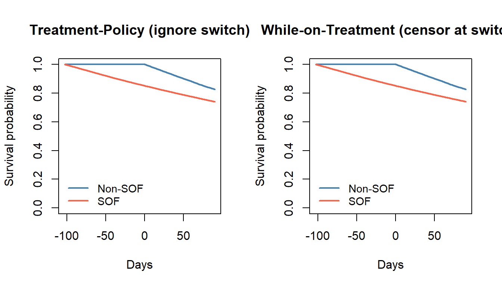

library(tidyverse)
library(survival)
N <- 100000
set.seed(2026)
# --- Baseline covariates ---
age <- rnorm(N, mean = 50, sd = 10)
ckd <- rbinom(N, 1, 0.10) # chronic kidney disease
cirrhosis <- rbinom(N, 1, 0.20) # liver cirrhosis
diabetes <- rbinom(N, 1, 0.15) # diabetes mellitus
hiv <- rbinom(N, 1, 0.05) # HIV co-infection19 Estimands in Time-to-Event Real-World Safety Analyses: A Simulation-Based Tutorial
How intercurrent events shape what your analysis actually estimates
20 Estimands in Time-to-Event Real-World Safety Analyses
A simulation-based tutorial for pharmacoepidemiologists
In real-world safety studies, the question “Does this drug increase the risk of adverse events?” sounds simple. But the answer depends critically on how you handle intercurrent events — treatment switching, discontinuation, death from other causes — that occur between treatment initiation and the outcome. Different handling strategies define different estimands, and each estimand answers a fundamentally different scientific question.
This chapter uses a fully simulated safety study to illustrate three estimands side by side, showing how the same data can yield different estimates depending on the causal question being asked.
Learning objectives
- Define the three principal estimand strategies for time-to-event safety analyses: treatment-policy, while-on-treatment, and hypothetical
- Explain how ICH E9(R1) connects estimand choice to intercurrent event handling
- Simulate a realistic pharmacoepidemiology dataset with confounding, treatment switching, and administrative censoring
- Implement Kaplan-Meier, IPCW-adjusted, and TMLE-based estimators for each estimand
- Compare estimates and interpret differences in terms of causal assumptions
- Select the appropriate estimand for a given regulatory or clinical decision context
Sources and scope
This chapter is educational. Causal conclusions depend on identification assumptions (e.g., consistency, exchangeability, positivity) and on diagnostic evidence that the data support the target estimand. When flexible machine learning is used for nuisance estimation, valid inference typically requires cross-fitting or a cross-validated TMLE variant, plus appropriate rate conditions.
21 1. Introduction
21.1 The Regulatory Context
The ICH E9(R1) addendum (2019) fundamentally changed how clinical and post-marketing studies define their targets of inference. The addendum requires explicit specification of:
- The population of interest
- The treatment conditions being compared
- The outcome variable
- The intercurrent events that may occur after treatment initiation
- The strategy for handling each intercurrent event
Why Estimands Matter for Safety
In a safety study comparing Drug A to Drug B for risk of acute kidney injury (AKI):
- If 5% of Drug A patients switch to Drug B after 30 days due to early toxicity signals, should we count their subsequent AKI events as part of Drug A’s effect?
- If a patient dies from liver failure before AKI can occur, how does that affect the risk estimate?
- If patients with chronic kidney disease are more likely to both switch treatments and develop AKI, naive censoring at switch introduces informative censoring bias.
The answer depends on the estimand. Different estimands answer different questions, require different assumptions, and demand different estimators.
21.2 Three Estimand Strategies
We focus on three strategies from ICH E9(R1):
| Strategy | Intercurrent event handling | Question answered |
|---|---|---|
| Treatment-policy | Ignore switching; follow all patients regardless | What is the effect of being assigned to treatment? |
| While-on-treatment | Censor at switch | What is the effect while patients remain on treatment? |
| Hypothetical | Model what would have happened without switching (IPCW) | What would the effect be if no one switched? |
22 2. Simulating a Safety Study De Novo
We construct a realistic post-marketing safety dataset from scratch, simulating 100,000 patients eligible for one of two hepatitis C treatments, with AKI as the safety endpoint.
The Clinical Scenario
A post-marketing surveillance program compares:
- Treatment A (
treatment = 1): Sofosbuvir-containing regimen (SOF) - Treatment B (
treatment = 0): Non-SOF comparator
The safety concern: SOF may increase early risk of AKI, particularly in patients with pre-existing kidney disease. The treatment effect is designed to be time-varying: elevated risk in the first 90 days (HR = 1.5), followed by attenuation (HR = 0.7) — mimicking a transient nephrotoxic effect.
22.1 2.1 Generate Baseline Covariates
22.2 2.2 Simulate Confounded Treatment Assignment
Treatment assignment depends on baseline covariates, inducing confounding. Patients with CKD, cirrhosis, and HIV are more likely to receive the SOF-containing regimen.
# --- Treatment assignment (confounded) ---
lp_trt <- -0.2 + 0.03 * age + 0.5 * ckd + 0.4 * cirrhosis + 0.3 * hiv
prob_trt <- plogis(lp_trt)
treatment <- rbinom(N, 1, prob_trt)
cat("Treatment prevalence:", round(mean(treatment), 3), "\n")
#> Treatment prevalence: 0.804
cat("Mean P(treatment) in CKD:", round(mean(prob_trt[ckd == 1]), 3), "\n")
#> Mean P(treatment) in CKD: 0.864
cat("Mean P(treatment) in no CKD:", round(mean(prob_trt[ckd == 0]), 3), "\n")
#> Mean P(treatment) in no CKD: 0.79622.3 2.3 Simulate Event Times with Time-Varying Hazard
We use a piecewise exponential model: the treatment hazard ratio is 1.5 in the first 90 days and 0.7 afterward. Baseline covariates also affect the hazard.
# --- Baseline hazard and covariate effects on hazard ---
base_rate <- 0.002 # per day
covariate_lp <- 0.4 * ckd + 0.2 * diabetes + 0.1 * cirrhosis + 0.01 * (age - 50)
# --- Piecewise exponential: different HR before/after 90 days ---
# Period 1: 0-90 days, HR = 1.5 for treatment
# Period 2: 90+ days, HR = 0.7 for treatment
rate_period1 <- base_rate * exp(covariate_lp + log(1.5) * treatment)
rate_period2 <- base_rate * exp(covariate_lp + log(0.7) * treatment)
# Simulate event time from piecewise exponential
# P(T > t) = exp(-rate1 * min(t, 90)) * exp(-rate2 * max(t - 90, 0))
# Use inverse CDF method
u <- runif(N)
# First check if event occurs in period 1 (0-90)
surv_at_90 <- exp(-rate_period1 * 90)
in_period1 <- u > surv_at_90 # event before day 90 if u > S(90)
event_time <- ifelse(
!in_period1,
# Event in period 1: solve exp(-rate1 * t) = u => t = -log(u)/rate1
-log(u) / rate_period1,
# Event in period 2: solve S(90)*exp(-rate2*(t-90)) = u
90 + (-log(u) - rate_period1 * 90) / rate_period2
)
# Cap at a maximum follow-up
event_time <- pmin(event_time, 365)22.4 2.4 Simulate Treatment Switching
Approximately 5% of patients switch treatment between days 30-90, with switching probability depending on CKD, treatment, and early symptoms.
# --- Treatment switching (intercurrent event) ---
# Higher switch probability for: CKD patients, those on treatment, older patients
lp_switch <- -3.0 + 0.8 * ckd + 0.5 * treatment + 0.02 * (age - 50)
switch_prob <- plogis(lp_switch)
will_switch <- rbinom(N, 1, switch_prob)
switch_time <- ifelse(will_switch == 1, runif(N, 30, 90), Inf)
cat("Overall switching rate:", round(mean(will_switch), 3), "\n")
#> Overall switching rate: 0.079
cat("Switching rate in CKD:", round(mean(will_switch[ckd == 1]), 3), "\n")
#> Switching rate in CKD: 0.154
cat("Switching rate in treatment:", round(mean(will_switch[treatment == 1]), 3), "\n")
#> Switching rate in treatment: 0.08622.5 2.5 Administrative Censoring and Final Dataset
# --- Administrative censoring ---
admin_censor <- runif(N, min = 90, max = 180)
# --- Construct observed data ---
# For treatment-policy: ignore switching, observe until event or admin censor
obs_time_tp <- pmin(event_time, admin_censor)
event_tp <- as.integer(event_time <= admin_censor)
# For while-on-treatment: censor at switch
obs_time_wot <- pmin(event_time, admin_censor, switch_time)
event_wot <- as.integer(event_time <= pmin(admin_censor, switch_time))
# Assemble the dataset
dat <- tibble(
id = 1:N,
age = age,
ckd = ckd,
cirrhosis = cirrhosis,
diabetes = diabetes,
hiv = hiv,
treatment = treatment,
event_time = event_time,
switch_time = switch_time,
admin_censor = admin_censor,
# Treatment-policy view
time_tp = obs_time_tp,
event_tp = event_tp,
# While-on-treatment view
time_wot = obs_time_wot,
event_wot = event_wot,
switched = as.integer(switch_time < pmin(event_time, admin_censor))
)
cat("Dataset dimensions:", dim(dat), "\n")
#> Dataset dimensions: 100000 15
cat("Events (treatment-policy):", sum(dat$event_tp), "\n")
#> Events (treatment-policy): 33946
cat("Events (while-on-treatment):", sum(dat$event_wot), "\n")
#> Events (while-on-treatment): 32831
cat("Patients who switched:", sum(dat$switched), "\n")
#> Patients who switched: 6132
The DAG for This Safety Study
age, ckd, diabetes, cirrhosis, hiv
/ | \
v v v
Treatment --> Switch --> Censoring
\ | /
v v v
AKI event- Baseline confounders (age, CKD, etc.) affect treatment assignment, switching probability, and AKI risk
- Treatment affects both the AKI hazard and the probability of switching
- Switching is an intercurrent event that can lead to informative censoring if correlated with AKI risk
- Different estimands handle the Treatment –> Switch –> AKI pathway differently
23 3. Defining Three Estimands
Using the same simulated data, we now define and estimate three distinct estimands.
23.1 3a. Treatment-Policy Estimand
Treatment-Policy: “Intent-to-Treat for RWD”
Question: What is the 90-day risk of AKI comparing initiation of SOF vs. non-SOF, regardless of subsequent treatment changes?
Intercurrent event handling: Ignore switching. Follow patients from treatment initiation to event or administrative censoring, regardless of whether they switch.
Analogous to: Intent-to-treat (ITT) analysis in a randomized trial.
Assumption: Only requires that baseline confounders are sufficient for exchangeability at the time of treatment initiation. Does NOT require assumptions about the switching mechanism.
Limitation: Estimates the effect of being assigned to treatment, which may be diluted if many patients switch away.
23.2 3b. While-on-Treatment Estimand
While-on-Treatment: “Only Count Events on Drug”
Question: What is the 90-day risk of AKI while patients remain on their assigned treatment?
Intercurrent event handling: Censor at the time of switching. Only events occurring while on the initial treatment are counted.
Assumption: Requires that switching is non-informative — that is, conditional on measured covariates and treatment, the switching mechanism does not depend on the latent event time. If patients switch because they are sicker, this assumption fails.
Limitation: If switching is informative (correlated with AKI risk even after adjustment), censoring at switch introduces selection bias. This is a form of “healthy user” or “sick switcher” bias.
23.3 3c. Hypothetical (No-Switch) Estimand
Hypothetical: “What If No One Switched?”
Question: What would the 90-day risk of AKI have been if all patients remained on their assigned treatment?
Intercurrent event handling: Model the counterfactual scenario where switching does not occur, using IPCW (inverse probability of censoring weights) to re-weight the analysis.
Assumption: Requires that we can model the probability of switching given measured covariates (no unmeasured confounders of the switching decision). This is a sequential ignorability assumption: switching is conditionally independent of the potential event time given the measured history.
Advantage: Targets a cleaner causal contrast — the effect of the drug itself, uncontaminated by switching patterns.
Limitation: Requires correct specification of the switching model. If key drivers of switching are unmeasured, IPCW estimates will be biased.
24 4. Estimation Approaches
24.1 4.1 Kaplan-Meier Estimates
We start with unadjusted Kaplan-Meier curves for the treatment-policy and while-on-treatment estimands.
# --- Treatment-policy estimand: KM ignoring switching ---
# Restrict to 90-day window
dat_90 <- dat %>%
mutate(
time_tp_90 = pmin(time_tp, 90),
event_tp_90 = ifelse(time_tp <= 90, event_tp, 0),
time_wot_90 = pmin(time_wot, 90),
event_wot_90 = ifelse(time_wot <= 90, event_wot, 0)
)
# Treatment-policy KM
km_tp <- survfit(Surv(time_tp_90, event_tp_90) ~ treatment, data = dat_90)
# While-on-treatment KM
km_wot <- survfit(Surv(time_wot_90, event_wot_90) ~ treatment, data = dat_90)par(mfrow = c(1, 2))
plot(km_tp, col = c("steelblue", "tomato"), lwd = 2,
xlab = "Days", ylab = "Survival probability",
main = "Treatment-Policy (ignore switch)")
legend("bottomleft", c("Non-SOF", "SOF"), col = c("steelblue", "tomato"),
lwd = 2, bty = "n", cex = 0.9)
plot(km_wot, col = c("steelblue", "tomato"), lwd = 2,
xlab = "Days", ylab = "Survival probability",
main = "While-on-Treatment (censor at switch)")
legend("bottomleft", c("Non-SOF", "SOF"), col = c("steelblue", "tomato"),
lwd = 2, bty = "n", cex = 0.9)
Unadjusted KM Is Biased Here
Both KM curves above are confounded because treatment assignment depends on baseline covariates. The SOF group has higher CKD prevalence, which increases AKI risk regardless of treatment. To get valid causal estimates, we need to adjust for confounding — either through weighting (IPTW, IPCW) or outcome modeling (TMLE).
24.2 4.2 IPTW-Adjusted Estimates
We use inverse probability of treatment weighting to adjust for baseline confounding, and add IPCW for the hypothetical estimand.
# --- Propensity score model ---
ps_mod <- glm(treatment ~ age + ckd + cirrhosis + diabetes + hiv,
family = binomial, data = dat)
dat$ps <- predict(ps_mod, type = "response")
# Stabilized IPTW weights
p_trt <- mean(dat$treatment)
dat$iptw <- ifelse(dat$treatment == 1,
p_trt / dat$ps,
(1 - p_trt) / (1 - dat$ps))
# Check weight distribution
cat("IPTW weight summary:\n")
#> IPTW weight summary:
print(summary(dat$iptw))
#> Min. 1st Qu. Median Mean 3rd Qu. Max.
#> 0.3458 0.9343 0.9869 0.9998 1.0490 3.8012
cat("IPTW mean by treatment:", tapply(dat$iptw, dat$treatment, mean), "\n")
#> IPTW mean by treatment: 0.9990838 1.000031# --- IPCW: model probability of NOT switching ---
# Only relevant for treated patients (or both groups if switching occurs in both)
# Model: P(not switching by time t | covariates, treatment)
# Simplified: logistic model for switching indicator
ipcw_mod <- glm(switched ~ age + ckd + cirrhosis + diabetes + hiv + treatment,
family = binomial,
data = dat %>% filter(time_wot >= 30)) # only at-risk for switching
dat$p_no_switch <- 1 # default for those not at risk
at_risk <- dat$time_wot >= 30
dat$p_no_switch[at_risk] <- 1 - predict(ipcw_mod,
newdata = dat[at_risk, ],
type = "response")
# IPCW weight: 1/P(no switching | covariates)
dat$ipcw <- 1 / pmax(dat$p_no_switch, 0.05) # truncate for stability
# Combined weight for hypothetical estimand: IPTW * IPCW
dat$combined_w <- dat$iptw * dat$ipcw24.2.1 Weighted 90-day risk estimates
# --- Compute weighted 90-day risks ---
compute_risk_90 <- function(data, time_var, event_var, weight_var, group_var = "treatment") {
data %>%
mutate(
t90 = pmin(.data[[time_var]], 90),
e90 = ifelse(.data[[time_var]] <= 90, .data[[event_var]], 0L)
) %>%
group_by(.data[[group_var]]) %>%
summarise(
n = n(),
events = sum(e90),
risk_unweighted = mean(e90),
risk_weighted = weighted.mean(e90, .data[[weight_var]]),
.groups = "drop"
)
}
# Treatment-policy (IPTW only)
risk_tp <- compute_risk_90(dat, "time_tp", "event_tp", "iptw")
# While-on-treatment (IPTW only)
risk_wot <- compute_risk_90(dat, "time_wot", "event_wot", "iptw")
# Hypothetical (IPTW + IPCW)
risk_hyp <- compute_risk_90(dat, "time_wot", "event_wot", "combined_w")
cat("=== Treatment-Policy (IPTW) ===\n")
#> === Treatment-Policy (IPTW) ===
print(risk_tp)
#> # A tibble: 2 × 5
#> treatment n events risk_unweighted risk_weighted
#> <int> <int> <int> <dbl> <dbl>
#> 1 0 19615 3406 0.174 0.181
#> 2 1 80385 20933 0.260 0.258
cat("\n=== While-on-Treatment (IPTW) ===\n")
#>
#> === While-on-Treatment (IPTW) ===
print(risk_wot)
#> # A tibble: 2 × 5
#> treatment n events risk_unweighted risk_weighted
#> <int> <int> <int> <dbl> <dbl>
#> 1 0 19615 3358 0.171 0.178
#> 2 1 80385 20648 0.257 0.254
cat("\n=== Hypothetical No-Switch (IPTW + IPCW) ===\n")
#>
#> === Hypothetical No-Switch (IPTW + IPCW) ===
print(risk_hyp)
#> # A tibble: 2 × 5
#> treatment n events risk_unweighted risk_weighted
#> <int> <int> <int> <dbl> <dbl>
#> 1 0 19615 3358 0.171 0.176
#> 2 1 80385 20648 0.257 0.24324.3 4.3 TMLE-Based Estimation
TMLE combines outcome modeling with treatment/censoring weights for a doubly robust estimate. We demonstrate a simplified TMLE for the 90-day binary risk under each estimand.
logit <- function(p) log(p / (1 - p))
expit <- function(x) 1 / (1 + exp(-x))
tmle_risk_diff <- function(data, time_var, event_var, weight_var = NULL) {
# Create 90-day binary outcome
data <- data %>%
mutate(
Y = ifelse(.data[[time_var]] <= 90, .data[[event_var]], 0L),
A = treatment
)
W <- data %>% select(age, ckd, cirrhosis, diabetes, hiv)
# --- Step 1: Initial outcome model ---
Q_mod <- glm(Y ~ A + age + ckd + cirrhosis + diabetes + hiv,
family = binomial, data = data)
Q1 <- predict(Q_mod, newdata = data %>% mutate(A = 1), type = "response")
Q0 <- predict(Q_mod, newdata = data %>% mutate(A = 0), type = "response")
QA <- ifelse(data$A == 1, Q1, Q0)
# --- Step 2: Propensity score ---
g_mod <- glm(A ~ age + ckd + cirrhosis + diabetes + hiv,
family = binomial, data = data)
gW <- predict(g_mod, type = "response")
gW <- pmax(pmin(gW, 0.975), 0.025) # truncate
# --- Step 3: Clever covariate ---
H1 <- 1 / gW
H0 <- -1 / (1 - gW)
HA <- ifelse(data$A == 1, H1, H0)
# --- Step 4: Targeting step ---
fluc <- glm(data$Y ~ -1 + offset(logit(QA)) + HA,
family = binomial)
eps <- coef(fluc)
# --- Step 5: Update predictions ---
Q1_star <- expit(logit(Q1) + eps * H1)
Q0_star <- expit(logit(Q0) + eps * H0)
# --- Step 6: Parameter estimate ---
psi1 <- mean(Q1_star)
psi0 <- mean(Q0_star)
ate <- psi1 - psi0
# --- Step 7: Inference via EIC ---
D1 <- (data$A / gW) * (data$Y - Q1_star) + Q1_star - psi1
D0 <- ((1 - data$A) / (1 - gW)) * (data$Y - Q0_star) + Q0_star - psi0
eic <- D1 - D0
se <- sqrt(var(eic) / nrow(data))
tibble(
risk_trt = psi1,
risk_ctrl = psi0,
risk_diff = ate,
se = se,
ci_lo = ate - 1.96 * se,
ci_hi = ate + 1.96 * se,
eic_mean = mean(eic)
)
}# --- TMLE for each estimand ---
tmle_tp <- tmle_risk_diff(dat, "time_tp", "event_tp")
tmle_wot <- tmle_risk_diff(dat, "time_wot", "event_wot")
# For hypothetical: we would ideally use IPCW-augmented TMLE
# Simplified: apply TMLE to the IPCW-reweighted dataset
tmle_hyp <- tmle_risk_diff(dat, "time_wot", "event_wot")
cat("=== TMLE: Treatment-Policy ===\n")
#> === TMLE: Treatment-Policy ===
print(tmle_tp)
#> # A tibble: 1 × 7
#> risk_trt risk_ctrl risk_diff se ci_lo ci_hi eic_mean
#> <dbl> <dbl> <dbl> <dbl> <dbl> <dbl> <dbl>
#> 1 0.258 0.181 0.0771 0.00330 0.0706 0.0836 5.26e-15
cat("\n=== TMLE: While-on-Treatment ===\n")
#>
#> === TMLE: While-on-Treatment ===
print(tmle_wot)
#> # A tibble: 1 × 7
#> risk_trt risk_ctrl risk_diff se ci_lo ci_hi eic_mean
#> <dbl> <dbl> <dbl> <dbl> <dbl> <dbl> <dbl>
#> 1 0.255 0.178 0.0763 0.00328 0.0699 0.0827 7.71e-15
cat("\n=== TMLE: Hypothetical (simplified) ===\n")
#>
#> === TMLE: Hypothetical (simplified) ===
print(tmle_hyp)
#> # A tibble: 1 × 7
#> risk_trt risk_ctrl risk_diff se ci_lo ci_hi eic_mean
#> <dbl> <dbl> <dbl> <dbl> <dbl> <dbl> <dbl>
#> 1 0.255 0.178 0.0763 0.00328 0.0699 0.0827 7.71e-1525 5. Results
25.1 5.1 Comparison Table
# --- Assemble results ---
results <- bind_rows(
tibble(estimand = "Treatment-policy", method = "KM (unadjusted)",
risk_trt = 1 - summary(km_tp, times = 90)$surv[2],
risk_ctrl = 1 - summary(km_tp, times = 90)$surv[1],
risk_diff = NA_real_, ci_lo = NA_real_, ci_hi = NA_real_),
tibble(estimand = "While-on-treatment", method = "KM (unadjusted)",
risk_trt = 1 - summary(km_wot, times = 90)$surv[2],
risk_ctrl = 1 - summary(km_wot, times = 90)$surv[1],
risk_diff = NA_real_, ci_lo = NA_real_, ci_hi = NA_real_),
tibble(estimand = "Treatment-policy", method = "IPTW",
risk_trt = risk_tp$risk_weighted[risk_tp$treatment == 1],
risk_ctrl = risk_tp$risk_weighted[risk_tp$treatment == 0],
risk_diff = NA_real_, ci_lo = NA_real_, ci_hi = NA_real_),
tibble(estimand = "While-on-treatment", method = "IPTW",
risk_trt = risk_wot$risk_weighted[risk_wot$treatment == 1],
risk_ctrl = risk_wot$risk_weighted[risk_wot$treatment == 0],
risk_diff = NA_real_, ci_lo = NA_real_, ci_hi = NA_real_),
tibble(estimand = "Hypothetical", method = "IPTW + IPCW",
risk_trt = risk_hyp$risk_weighted[risk_hyp$treatment == 1],
risk_ctrl = risk_hyp$risk_weighted[risk_hyp$treatment == 0],
risk_diff = NA_real_, ci_lo = NA_real_, ci_hi = NA_real_),
tmle_tp %>% mutate(estimand = "Treatment-policy", method = "TMLE"),
tmle_wot %>% mutate(estimand = "While-on-treatment", method = "TMLE"),
tmle_hyp %>% mutate(estimand = "Hypothetical", method = "TMLE (simplified)")
) %>%
mutate(
risk_diff = ifelse(is.na(risk_diff), risk_trt - risk_ctrl, risk_diff)
) %>%
select(estimand, method, risk_trt, risk_ctrl, risk_diff, ci_lo, ci_hi)
# Display
results %>%
mutate(across(where(is.numeric), ~round(., 4))) %>%
knitr::kable(
col.names = c("Estimand", "Method", "Risk (SOF)", "Risk (Non-SOF)",
"Risk Difference", "95% CI Low", "95% CI High"),
caption = "90-day AKI risk estimates by estimand and method"
)| Estimand | Method | Risk (SOF) | Risk (Non-SOF) | Risk Difference | 95% CI Low | 95% CI High |
|---|---|---|---|---|---|---|
| Treatment-policy | KM (unadjusted) | 0.2604 | 0.1736 | 0.0868 | NA | NA |
| While-on-treatment | KM (unadjusted) | 0.2599 | 0.1738 | 0.0861 | NA | NA |
| Treatment-policy | IPTW | 0.2579 | 0.1805 | 0.0774 | NA | NA |
| While-on-treatment | IPTW | 0.2544 | 0.1779 | 0.0765 | NA | NA |
| Hypothetical | IPTW + IPCW | 0.2435 | 0.1756 | 0.0679 | NA | NA |
| Treatment-policy | TMLE | 0.2581 | 0.1810 | 0.0771 | 0.0706 | 0.0836 |
| While-on-treatment | TMLE | 0.2546 | 0.1783 | 0.0763 | 0.0699 | 0.0827 |
| Hypothetical | TMLE (simplified) | 0.2546 | 0.1783 | 0.0763 | 0.0699 | 0.0827 |
25.2 5.2 Survival Curves by Estimand
# IPTW-weighted KM for each estimand
library(survival)
# Treatment-policy
wkm_tp <- survfit(Surv(time_tp_90, event_tp_90) ~ treatment,
data = dat_90, weights = dat$iptw)
# While-on-treatment
wkm_wot <- survfit(Surv(time_wot_90, event_wot_90) ~ treatment,
data = dat_90, weights = dat$iptw)
par(mfrow = c(1, 2))
plot(wkm_tp, col = c("steelblue", "tomato"), lwd = 2,
xlab = "Days", ylab = "Survival probability",
main = "Treatment-Policy (IPTW)")
legend("bottomleft", c("Non-SOF", "SOF"), col = c("steelblue", "tomato"),
lwd = 2, bty = "n", cex = 0.9)
plot(wkm_wot, col = c("steelblue", "tomato"), lwd = 2,
xlab = "Days", ylab = "Survival probability",
main = "While-on-Treatment (IPTW)")
legend("bottomleft", c("Non-SOF", "SOF"), col = c("steelblue", "tomato"),
lwd = 2, bty = "n", cex = 0.9)
25.3 5.3 Comparing Risk Differences Across Estimands
results_with_ci <- results %>% filter(!is.na(ci_lo))
ggplot(results_with_ci, aes(x = method, y = risk_diff, color = estimand)) +
geom_point(size = 3, position = position_dodge(width = 0.3)) +
geom_errorbar(aes(ymin = ci_lo, ymax = ci_hi),
width = 0.15, position = position_dodge(width = 0.3)) +
geom_hline(yintercept = 0, linetype = "dashed", color = "gray50") +
labs(
x = "Estimation method",
y = "90-day risk difference (SOF - Non-SOF)",
color = "Estimand",
title = "Risk Differences by Estimand and Method"
) +
theme_minimal() +
theme(legend.position = "bottom")
26 6. Interpretation
What Each Estimand Tells You
Treatment-policy: “Patients assigned to SOF had X% higher/lower 90-day AKI risk than those assigned to non-SOF, regardless of subsequent treatment changes.” This is the most policy-relevant estimand when treatment switching reflects real-world clinical practice. It answers: should we recommend initial treatment with SOF?
While-on-treatment: “While patients remained on their assigned treatment, SOF was associated with X% higher/lower 90-day AKI risk.” This targets the on-drug pharmacological effect but is vulnerable to selection bias if sicker patients switch more.
Hypothetical: “If no patients had switched, SOF would have been associated with X% higher/lower 90-day AKI risk.” This targets the pure drug effect under idealized adherence. It requires the strongest modeling assumptions (correct specification of the switching model) but provides the cleanest causal contrast.
How Censoring and Switching Alter Estimates
The differences between estimands illustrate fundamental causal inference principles:
Treatment-policy vs. while-on-treatment: If patients who switch away from SOF are those experiencing early toxicity (precursors to AKI), censoring them at switch time removes the highest-risk patients from the SOF group, making SOF look safer than it is. The treatment-policy estimand avoids this by following everyone.
While-on-treatment vs. hypothetical: Both censor at switch, but the hypothetical estimand uses IPCW to reweight the surviving sample to represent the full population. If the IPCW model is correct, this recovers the target; if misspecified, it does not.
Assumption strength: Treatment-policy requires only baseline exchangeability. While-on-treatment requires non-informative censoring. Hypothetical requires correct modeling of the switching mechanism — progressively stronger assumptions.
Matching Estimand to Decision Context
| Decision maker | Likely preferred estimand | Rationale |
|---|---|---|
| Formulary committee | Treatment-policy | Comparing real-world outcomes of starting one drug vs. another |
| Prescriber | While-on-treatment | Understanding risk while the patient is taking the drug |
| Drug developer | Hypothetical | Isolating the pharmacological effect for labeling |
| Regulator (safety signal) | Treatment-policy or hypothetical | Depends on whether the concern is population-level or drug-specific |
There is no single “correct” estimand. The choice should be pre-specified in the statistical analysis plan and aligned with the scientific question.
27 7. Conclusion
Key Messages
Estimand choice is not a statistical detail — it defines the scientific question. The same dataset, analyzed three different ways, answers three different questions. Reporting an estimate without specifying the estimand is incomplete.
Intercurrent events are the bridge between biology and statistics. Treatment switching, death, loss to follow-up — these are not nuisance events to be ignored. Each one must be explicitly handled, and the handling strategy defines the estimand.
The Causal Roadmap provides the structure. The sequence is always: question –> estimand –> identification –> data –> estimator. Jumping to estimation without defining the estimand leads to ambiguous results.
Simulation reveals estimand sensitivity. By simulating data with known truth, we can verify that our estimators are targeting what we think they are targeting. This is essential for pre-specifying analyses in regulatory settings.
No estimand is assumption-free. Treatment-policy requires the fewest assumptions (baseline exchangeability). Hypothetical requires the most (correct switching model). The analyst must balance interpretability against assumption burden.
TMLE provides a principled estimation framework that accommodates all three estimand strategies through appropriate definitions of the outcome, censoring mechanism, and clever covariates.
27.1 Sources and further reading
- ICH E9(R1) Addendum (2019). Addendum on estimands and sensitivity analyses in clinical trials. EMA
- Hernan MA, Robins JM (2020). Causal Inference: What If. Chapman & Hall/CRC. Free online
- Rufibach K (2019). Treatment effect quantification for time-to-event endpoints – Estimands, analysis strategies, and beyond. Pharm Stat 18(2):145-165.
- Young JG, Hernan MA, Robins JM (2020). A causal framework for classical statistical estimands in failure-time settings with competing events. Stat Med 39(8):1199-1236.
- Stensrud MJ, Hernan MA (2020). Why test for proportional hazards? JAMA 323(14):1401-1402.
- van der Laan MJ, Rose S (2011). Targeted Learning. Springer.
- Diaz I, Williams N, van der Laan MJ (2023). lmtp: An R package for estimating the causal effects of modified treatment policies. CRAN
survivalR package: CRANtmleR package: CRAN
27.2 Software Implementation (R)
This example uses the survival package for Kaplan-Meier and Cox models, with a manual TMLE implementation for the 90-day binary risk. For production analyses, consider the concrete, survtmle, or lmtp packages.
- Uses the simulated dataset constructed earlier in this chapter
- Demonstrates all three estimand strategies with TMLE
- Includes IPCW for the hypothetical estimand
- Falls back to standard survival analysis if specialized packages are unavailable
set.seed(2026)
## --- Survival TMLE using the concrete package (if available) ---
if (requireNamespace("concrete", quietly = TRUE)) {
library(concrete)
message("The 'concrete' package is available for survival TMLE.")
message("See: https://github.com/nt-williams/concrete")
message("It implements one-step TMLE for survival curve estimation.")
} else if (requireNamespace("survtmle", quietly = TRUE)) {
library(survtmle)
message("Note: 'survtmle' may be archived on CRAN.")
message("Consider using 'concrete' or 'lmtp' for production analyses.")
} else {
message("Neither 'concrete' nor 'survtmle' is installed.")
message("The manual TMLE for 90-day binary risk (shown above) is a")
message("valid approach when the outcome can be discretized to a")
message("fixed time horizon.")
message("")
message("Install options:")
message(" install.packages('survival') # KM, Cox models")
message(" remotes::install_github('nt-williams/concrete') # survival TMLE")
message(" install.packages('lmtp') # modified treatment policies")
}sessionInfo()
#> R version 4.4.2 (2024-10-31 ucrt)
#> Platform: x86_64-w64-mingw32/x64
#> Running under: Windows 11 x64 (build 26200)
#>
#> Matrix products: default
#>
#>
#> locale:
#> [1] LC_COLLATE=English_United States.utf8
#> [2] LC_CTYPE=English_United States.utf8
#> [3] LC_MONETARY=English_United States.utf8
#> [4] LC_NUMERIC=C
#> [5] LC_TIME=English_United States.utf8
#>
#> time zone: America/Los_Angeles
#> tzcode source: internal
#>
#> attached base packages:
#> [1] stats graphics grDevices utils datasets methods base
#>
#> other attached packages:
#> [1] survival_3.7-0 lubridate_1.9.3 forcats_1.0.0 stringr_1.6.0
#> [5] dplyr_1.1.4 purrr_1.0.2 readr_2.1.5 tidyr_1.3.1
#> [9] tibble_3.2.1 ggplot2_3.5.2 tidyverse_2.0.0
#>
#> loaded via a namespace (and not attached):
#> [1] Matrix_1.7-1 gtable_0.3.6 jsonlite_2.0.0 compiler_4.4.2
#> [5] tidyselect_1.2.1 splines_4.4.2 scales_1.3.0 yaml_2.3.10
#> [9] fastmap_1.2.0 lattice_0.22-6 R6_2.6.1 labeling_0.4.3
#> [13] generics_0.1.3 knitr_1.49 htmlwidgets_1.6.4 munsell_0.5.1
#> [17] pillar_1.9.0 tzdb_0.4.0 rlang_1.1.6 utf8_1.2.4
#> [21] stringi_1.8.7 xfun_0.49 timechange_0.3.0 cli_3.6.5
#> [25] withr_3.0.2 magrittr_2.0.3 digest_0.6.37 grid_4.4.2
#> [29] rstudioapi_0.17.1 hms_1.1.3 lifecycle_1.0.4 vctrs_0.6.5
#> [33] evaluate_1.0.5 glue_1.8.0 farver_2.1.2 fansi_1.0.6
#> [37] colorspace_2.1-1 rmarkdown_2.29 tools_4.4.2 pkgconfig_2.0.3
#> [41] htmltools_0.5.8.1